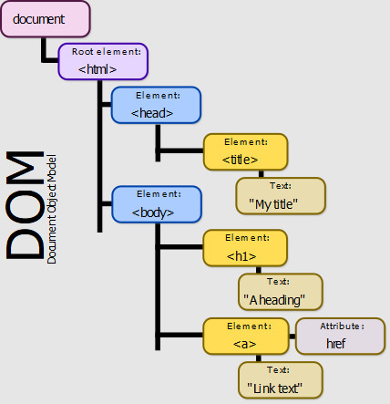

An overview of HTML and CSS, the DOM and JavaScript
2 May 2020
The difference between HTML and CSS
Hypertext Markup Language (HTML) is used to provide the structure of a website and its content like text and images. Cascading Style Sheet (CSS) is then used to transform how the content of the website looks and behaves.
Let's think of HTML as a house. It has doors and windows, hallway, living room, dining room, kitchen, bathroom, bedrooms, a laundry and maybe a porch at the front or at the back. All of these things make up the structure of the house.
Now, it's all good and well having a house but inside it needs to be fitted and furnished to make it liveable as a home.
To make it a home you need to decide on the interior fixtures and fittings, furniture and so on. You may also decide on a design style like contemporary or industrial, a colour palette and statement pieces. These all make up the interior design of the house; we can think of CSS as such. CSS is used to change and style the content of a website in various ways.

The DOM and why it is useful
The Document Object Model (DOM) is an object-oriented structural representation of an HTML document as interpreted by your browser. The objects represented are valid HTML elements which make up the structural content of a website. It's also smart in that it will automatically add or correct elements that may not be present in an HTML document to make it a valid object. This is similar to spell check in Word correcting the grammar and syntax of a document.
The DOM represents the objects in a tree structure, similar to a family tree. Like a family tree, it shows the relationships between each object, from the parent to child branches, which may have leaves. Below is an example of a DOM tree by Birger Eriksson / CC BY-SA. 
So how is the DOM relevant to a website? Previously I established that HTML and CSS can create a pretty good-looking website. However on their own they can only create a static website. To make a website engaging you'd probably want to add some interactive features. Going back to the analogy of the house, you may want to have cool features like clap sensor lights and remote-controlled blinds.
The good news is that for a website you can add interactive features using JavaScript. This is where the DOM comes in handy. JavaScript is an object-oriented programming language. This means that it relies on the DOM tree structure to grab an object, so to speak. Once it has that object it can manipulate it to make it interactive.
For example you may use JavaScript to add animation to a website. The GIF below
shows the difference JavaScript can make. HTML provides the structural outline
of a gator illustration. CSS comes along and adds features and colours inside the
outline to turn it into a blue-yellow gator. Add JavaScript on top and you can have
moving love hearts coming out of the gator. Pretty neat, right?

JavaScript concepts explained through examples from everyday life
Before I dive into loop, control flow and several other concepts in JavaScript, keep in mind that JavaScript is a language that tells a computer to do something. Unlike humans, computers don't have intuition on how to perform tasks. They need to be told the exact step-by-step instructions (i.e. codes) on how to do something.
JavaScript: Loop
Normally a line of code tells the computer to do one thing but there may be times when you need it to run the same code multiple times. A loop in JavaScript tells the computer to repeat an action some number of times.
In everyday life, there are tasks you would perform multiple times in one go. Let's say you have some friends over and you've made carrot cake for everyone to share. You need to cut the cake into the right number of slices for everyone.
You wouldn't pick up the cake knife, cut one slice of the carrot cake, put the knife down and repeat the whole process over and over until you have enough slices. Instead you would decide how many slices of cake you need, grab the cake knife, cut the cake into the required number of slices and then put the knife down once you're done.
A computer would do the former unless you tell it to do the latter, in this instance by using a loop. Let's say you need to tell it to slice the cake six times. You might write a loop code like the one below to make the computer do so.
// Slice cake loop
for (let i = 0; i < 6; i++) {
console.log("Slice cake");
}
// Expected output:
"Slice cake"
"Slice cake"
"Slice cake"
"Slice cake"
"Slice cake"
"Slice cake"
JavaScript: Control flow
A computer reads and executes code in the order that the code has been designed to do.
Often though, we want it to run a code only if something is true or not.
Control flow asks the computer to check if something is true and then either run the
code supplied if it is or move on if it's not. An example of control flow in
JavaScript is the conditional statement if...else.
Let's go back to the friends you have over and the carrot cake slices. Before serving
them to your friends, you ask each of them if they want yoghurt with their slice of
carrot cake. If they do you would add yoghurt to the plate with their cake,
else you wouldn't. In this case, below is an example of an
if...else code you'd write for the computer.
// Yoghurt with cake if...else control flow statement
if (friendWantsYoghurt == true) {
addYoghurt(); // Add yoghurt to plate with cake slice
} else {
doNothing(); // Don't add yoghurt to plate with cake slice
}
JavaScript: Array and accessing data from an array
In JavaScript, an array stores a range of data in an index sequence. You can access a data in an array by referencing its index using bracket notation. The index in an array starts from 0, which means the first data has an index of 0, the second data has an index of 1 and so on.
Remember those friends you have over and they each have a slice of cake, with or without yoghurt? They may also like to have a hot drink with the cake. Imagine you're super organised and in the kitchen, all your hot drink options are perfectly lined up next to each other. In an array, you would tell the computer that the line of hot drinks looks like this:
// Array of hot drinks options in sequential order
hotDrinksArray = ["coffee", "black tea", "green tea", "chai latte"]
Given that you instinctively know the exact position of each drink option in the line, you'd be able to grab the drink you need without looking at the labels. To tell the computer to get a certain hot drink from the array you would reference its index position in the array using bracket notation as below:
// Get a drink from hotDrinksArray
hotDrinksArray[0]; // Get "coffee"
hotDrinksArray[1]; // Get "black tea"
hotDrinksArray[2]; // Get "green tea"
hotDrinksArray[3]; // Get "chai latte"
JavaScript: Object and accessing data from an object
Object is another way to store a range of data in JavaScript. Instead of storing data in an index sequence, an object stores data using named properties that have assigned values. You can access properties of an object with a simple dot-notation or bracket notation.
Let's go back to your friends, their slice of cake and the hot drink they may like to have. Now let's say you're not that organised, so each of the hot drink options are stored in different parts of the kitchen and you know where each drink can be found. In an object, you would tell the computer the location (named property) and the hot drink in it (value) like below:
// Object specifying location of hot drinks options in kitchen
hotDrinksLocationObject = {
kitchenCounter: "coffee",
topShelf: "black tea",
middleShelf: "green tea",
bottomShelf: "chai latte",
}
Now that you've defined the location of each hot drink to the computer in an object, you would tell it to get a specific drink by pairing the object and property names using dot notation like so:
// Get a drink from hotDrinksLocationObject using dot notation
hotDrinksLocationObject.kitchenCounter; // Get "coffee"
hotDrinksLocationObject.topShelf; // Get "black tea"
hotDrinksLocationObject.middleShelf; // Get "green tea"
hotDrinksLocationObject.bottomShelf; // Get "chai latte"
You can also use bracket notation for the property name instead, as shown in the example below. Normally you only need to do this if the property name has special characters or spaces. Make sure you also wrap the property name in single or double quotes if using bracket notation.
// Get a drink from hotDrinksLocationObject using bracket notation
hotDrinksLocationObject['kitchenCounter']; // Get "coffee"
JavaScript: Function and why it is important
A function is a group of sequential instructions that can be used (called) as many times as you like. You create (declare) a function by giving it a name, then specify the things you would like it to do. Once a function has been created (declared), you can use (call) it any time, as many times as you like, simply by using its name instead rewriting the same code.
Going back to the analogy of friends and cake, you could technically create a function that instructs a computer to: slice the cake, place each slice on its own plate, put yoghurt on the plate or not depending on each friend's preference and so on.
You're likely to have friends over again for cake and hot drinks, so having a function declared in the computer means you can quickly call the function to get the computer to perform the tasks in it. You can also update the function with a new number of cake slices to cut, yoghurt preferences and so on when you reuse it.
As you can see, a function is a very efficient way of grouping codes that can be used (called) anytime. You can even vary the parameters in a function when it is reused. This can save developers a lot of time when they are coding a website etc. and this is why it is important.